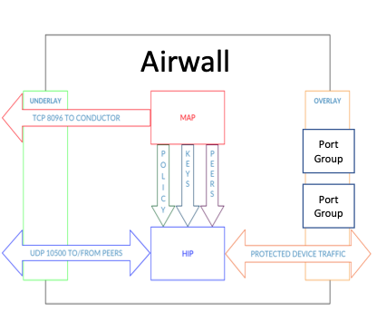
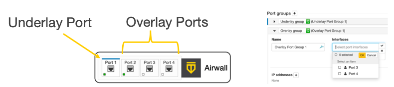
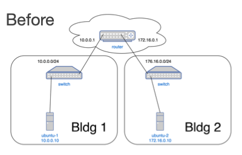
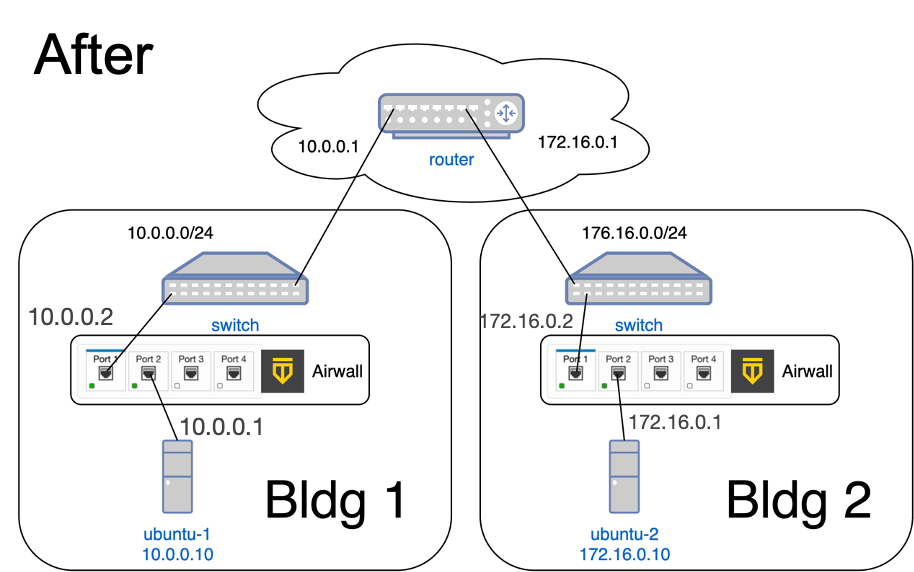
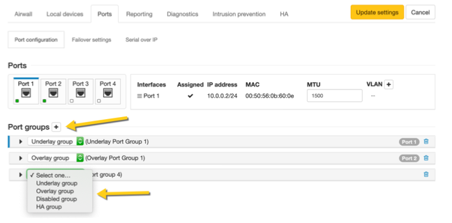
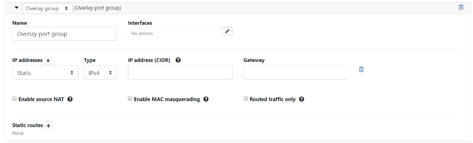
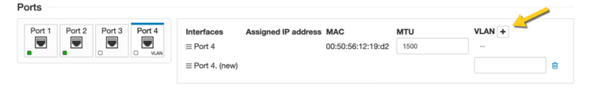
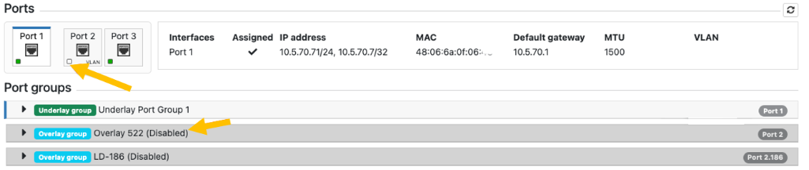

Set up Overlay Port Groups
The default port groups work for some deployments. You may need to set up overlay port groups if your deployment requires it.
Overlay Port Groups are used to connect your Airwall Gateway to your protected networks. Airwall Gateways default to having a single overlay Port Group, but you may need to configure your overlay port groups when you want to:
- Micro-segment your network for fine grain security control
- Configure IP addresses or Source NAT (SNAT) for routed deployments
- Set up two Airwall Gateways for High Availability
If your Airwall Gateway is only providing relay functionality, it only needs an Underlay Port Group, and does not use any configured Overlay port group.
You can set up multiple port groups for an overlay, assigned to different physical or VLAN tagged sub-interface ports. When multiple ports are included in a Port Group, they are bridged. Port groups are also connected to the overlay through routing and/or bridging.

Get to Know Your Airwall Gateway Ports
Here is how the physical ports are assigned on most Airwall Gateways:
- Port 1 – Connects to the initial underlay network, and is assigned to the underlay Port Group.
- Port 2 & Up – Connect to overlay networks, and are assigned to an overlay Port Group.

Basic Airwall Gateway Deployment
The most basic Airwall Gateway deployment design is to put Airwall Gateways inline in front of protected devices. If you don’t want to, or can’t, change IP addresses, you replicate the default gateway of the router on the overlay Port Group. (If these devices are using DHCP, see Protected devices with static routing to configure DHCP on the overlay port group.)

The underlay IP address can be any address on the network. DHCP is common, or you can configure a static IP if needed. The overlay IP address is the same as the default gateway on the router.

Set up an Overlay Port Group
By default, an Airwall Gateway has two port groups. One underlay port group assigned to Port 1 and one overlay port group assigned to the remaining ports. On virtual and cloud Airwall Gateways, you may be able to configure more ports if supported by the virtual or cloud platform.
- In the Conductor, go to the Airwall Gateway on which you want to set Port Groups, open the Ports tab, and select Edit Settings.
-
Select an Overlay
port group you want to use, or add a new port group by clicking the + to the
right of Port groups, and select Overlay
group.

-
Click the arrow on the left of your Overlay group header
to expand the settings for that Port Group.

- Enter a name for the group, and under Interfaces, select the ports or other interfaces for the group.
- Under IP addresses, click the + to add IP addresses. For example, 10.0.1.1/24 (be sure to include the prefix length). Your protected devices will use this address as their gateway to reach the rest of your overlay network.
-
Select the network options that apply for your implementation:
- If you are connecting this port group to a router connected to a larger overlay network, you can configure static routes or even a default gateway.
- Select Update Settings.
Add Interfaces to a Port
Each physical or logical port on an Airwall Gateway has a single interface by default, that can be assigned to a port group. If you are connecting an Airwall Gateway port to a switch using an 802.1q trunk allowing multiple VLANs, you need to add additional interfaces. To do this:
- Up above the Port Groups section, select the Port and then click Edit Settings.
- Next to VLAN, click the + to add a new VLAN for this overlay.
-
Enter the VLAN tag to match the VLAN config on the switch.
Note: If you disable the VLAN parent interface, the child interfaces are also disabled.
Do I need a gateway?
You only need a gateway if the Airwall Gateway needs to know how to reach additional networks from this port. The Airwall Gateway is the gateway for its protected devices. In general, using static routes (for example, 10.0.0.0/8) for your corporate network is preferable to using a default gateway (which is a 0.0.0.0/0 route), particularly if you have a bypass destination of 0.0.0.0/0 set up, since that will cause a conflict.